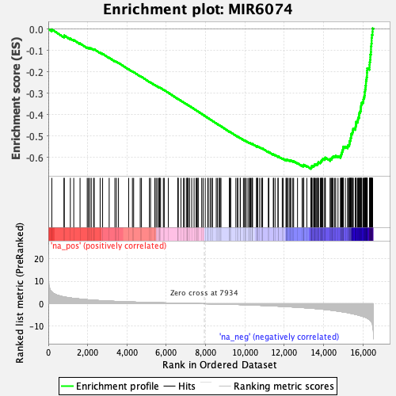
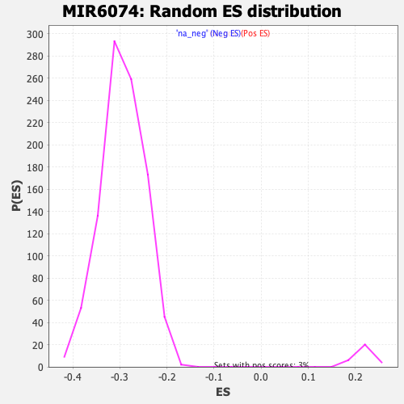

| | | Dataset | DE_genes2 |
| Phenotype | NoPhenotypeAvailable |
| Upregulated in class | na_neg |
| GeneSet | MIR6074 |
| Enrichment Score (ES) | -0.65337515 |
| Normalized Enrichment Score (NES) | -2.2200053 |
| Nominal p-value | 0.0 |
| FDR q-value | 0.0 |
| FWER p-Value | 0.0 |
Table: GSEA Results Summary

Fig 1: Enrichment plot: MIR6074
Profile of the Running ES Score & Positions of GeneSet Members on the Rank Ordered List
| PROBE | GENE SYMBOL | GENE_TITLE | RANK IN GENE LIST | RANK METRIC SCORE | RUNNING ES | CORE ENRICHMENT | | 1 | DUSP16 | | | 178 | 5.211 | -0.0021 | No |
| 2 | TSPAN2 | | | 797 | 3.054 | -0.0348 | No |
| 3 | DAAM2 | | | 812 | 3.026 | -0.0305 | No |
| 4 | SAP18 | | | 1121 | 2.574 | -0.0450 | No |
| 5 | KLF10 | | | 1294 | 2.362 | -0.0515 | No |
| 6 | ARL15 | | | 1614 | 2.079 | -0.0676 | No |
| 7 | VNN1 | | | 1979 | 1.768 | -0.0869 | No |
| 8 | TTC9 | | | 2039 | 1.727 | -0.0876 | No |
| 9 | IRF2 | | | 2105 | 1.678 | -0.0887 | No |
| 10 | PEX11B | | | 2185 | 1.631 | -0.0908 | No |
| 11 | RNF121 | | | 2303 | 1.558 | -0.0953 | No |
| 12 | AKIRIN1 | | | 2336 | 1.539 | -0.0946 | No |
| 13 | TUSC1 | | | 2635 | 1.370 | -0.1106 | No |
| 14 | SETBP1 | | | 2761 | 1.305 | -0.1160 | No |
| 15 | DIP2B | | | 3095 | 1.156 | -0.1345 | No |
| 16 | CXCL6 | | | 3386 | 1.044 | -0.1505 | No |
| 17 | JUNB | | | 3462 | 1.017 | -0.1534 | No |
| 18 | RP1L1 | | | 3568 | 0.983 | -0.1581 | No |
| 19 | KIAA1328 | | | 4087 | 0.811 | -0.1885 | No |
| 20 | SSPN | | | 4277 | 0.756 | -0.1988 | No |
| 21 | ERAP1 | | | 4339 | 0.738 | -0.2013 | No |
| 22 | ZNF423 | | | 4674 | 0.643 | -0.2207 | No |
| 23 | FAXC | | | 4736 | 0.628 | -0.2234 | No |
| 24 | MEP1A | | | 5141 | 0.532 | -0.2473 | No |
| 25 | ENPP3 | | | 5199 | 0.520 | -0.2499 | No |
| 26 | OAT | | | 5417 | 0.466 | -0.2624 | No |
| 27 | SERPINB10 | | | 5483 | 0.453 | -0.2656 | No |
| 28 | SLC37A3 | | | 5558 | 0.437 | -0.2694 | No |
| 29 | MMP13 | | | 5630 | 0.420 | -0.2730 | No |
| 30 | TRIM38 | | | 5653 | 0.415 | -0.2737 | No |
| 31 | SNTN | | | 5665 | 0.412 | -0.2737 | No |
| 32 | COL4A4 | | | 5707 | 0.403 | -0.2755 | No |
| 33 | ARMC2 | | | 5850 | 0.375 | -0.2836 | No |
| 34 | ITGB8 | | | 5895 | 0.366 | -0.2856 | No |
| 35 | EP300 | | | 6102 | 0.325 | -0.2977 | No |
| 36 | R3HDM2 | | | 6582 | 0.226 | -0.3267 | No |
| 37 | NAALADL2 | | | 6597 | 0.223 | -0.3272 | No |
| 38 | THRB | | | 6605 | 0.221 | -0.3272 | No |
| 39 | TRIP12 | | | 6745 | 0.194 | -0.3354 | No |
| 40 | CLK2 | | | 6870 | 0.175 | -0.3427 | No |
| 41 | ITFG1 | | | 6927 | 0.167 | -0.3459 | No |
| 42 | CREBBP | | | 7037 | 0.148 | -0.3523 | No |
| 43 | CDYL2 | | | 7059 | 0.144 | -0.3534 | No |
| 44 | DNAL1 | | | 7077 | 0.139 | -0.3542 | No |
| 45 | ZNF844 | | | 7122 | 0.130 | -0.3567 | No |
| 46 | SYT16 | | | 7180 | 0.120 | -0.3599 | No |
| 47 | MRPL17 | | | 7291 | 0.099 | -0.3665 | No |
| 48 | MAN1C1 | | | 7413 | 0.079 | -0.3738 | No |
| 49 | CDS1 | | | 7517 | 0.061 | -0.3800 | No |
| 50 | ZNF124 | | | 7555 | 0.055 | -0.3822 | No |
| 51 | TMEM108 | | | 7609 | 0.047 | -0.3854 | No |
| 52 | DCLK1 | | | 7621 | 0.044 | -0.3860 | No |
| 53 | ARMCX3 | | | 7800 | 0.018 | -0.3969 | No |
| 54 | DLC1 | | | 7871 | 0.008 | -0.4011 | No |
| 55 | AQP4 | | | 7980 | -0.008 | -0.4077 | No |
| 56 | CROT | | | 8109 | -0.028 | -0.4155 | No |
| 57 | WDFY3 | | | 8131 | -0.030 | -0.4168 | No |
| 58 | FANCF | | | 8227 | -0.046 | -0.4225 | No |
| 59 | ZNF816 | | | 8296 | -0.055 | -0.4266 | No |
| 60 | CDH19 | | | 8351 | -0.066 | -0.4298 | No |
| 61 | SPATA6 | | | 8539 | -0.100 | -0.4411 | No |
| 62 | FBXO38 | | | 8596 | -0.109 | -0.4444 | No |
| 63 | SHC3 | | | 8687 | -0.128 | -0.4497 | No |
| 64 | CCZ1B | | | 8698 | -0.129 | -0.4501 | No |
| 65 | TULP3 | | | 8743 | -0.141 | -0.4525 | No |
| 66 | PCDH18 | | | 8780 | -0.150 | -0.4545 | No |
| 67 | CXADR | | | 9210 | -0.243 | -0.4804 | No |
| 68 | STAU2 | | | 9221 | -0.246 | -0.4806 | No |
| 69 | ADH7 | | | 9227 | -0.248 | -0.4804 | No |
| 70 | SNX31 | | | 9277 | -0.262 | -0.4830 | No |
| 71 | ITGA4 | | | 9537 | -0.320 | -0.4983 | No |
| 72 | MCTS1 | | | 9618 | -0.345 | -0.5027 | No |
| 73 | FRMD3 | | | 9637 | -0.349 | -0.5032 | No |
| 74 | RAB44 | | | 9757 | -0.387 | -0.5098 | No |
| 75 | PTPRN2 | | | 9763 | -0.390 | -0.5095 | No |
| 76 | MMD | | | 9922 | -0.436 | -0.5184 | No |
| 77 | HIVEP1 | | | 9989 | -0.457 | -0.5217 | No |
| 78 | ABCC9 | | | 9991 | -0.458 | -0.5210 | No |
| 79 | ZNF28 | | | 10064 | -0.478 | -0.5246 | No |
| 80 | PSD3 | | | 10153 | -0.510 | -0.5291 | No |
| 81 | ST8SIA4 | | | 10229 | -0.532 | -0.5328 | No |
| 82 | ARFIP1 | | | 10245 | -0.538 | -0.5328 | No |
| 83 | CALCRL | | | 10287 | -0.550 | -0.5344 | No |
| 84 | GRIK3 | | | 10352 | -0.569 | -0.5373 | No |
| 85 | AP1S3 | | | 10358 | -0.572 | -0.5367 | No |
| 86 | SYNJ1 | | | 10387 | -0.584 | -0.5374 | No |
| 87 | RSBN1 | | | 10590 | -0.660 | -0.5487 | No |
| 88 | CYBB | | | 10595 | -0.661 | -0.5478 | No |
| 89 | NTNG1 | | | 10638 | -0.673 | -0.5492 | No |
| 90 | IRAK1BP1 | | | 10642 | -0.675 | -0.5483 | No |
| 91 | NUDT7 | | | 10743 | -0.705 | -0.5532 | No |
| 92 | RFX3 | | | 10837 | -0.739 | -0.5576 | No |
| 93 | RHOU | | | 10882 | -0.759 | -0.5590 | No |
| 94 | ELAVL2 | | | 10896 | -0.764 | -0.5585 | No |
| 95 | PTPRJ | | | 11188 | -0.876 | -0.5749 | No |
| 96 | UBE2W | | | 11215 | -0.888 | -0.5750 | No |
| 97 | AFF4 | | | 11444 | -0.986 | -0.5873 | No |
| 98 | UTP14C | | | 11452 | -0.987 | -0.5860 | No |
| 99 | BEX1 | | | 11531 | -1.019 | -0.5891 | No |
| 100 | PRDM13 | | | 11682 | -1.081 | -0.5965 | No |
| 101 | EPHA5 | | | 11683 | -1.081 | -0.5946 | No |
| 102 | CADM2 | | | 11895 | -1.177 | -0.6056 | No |
| 103 | PDP1 | | | 11945 | -1.194 | -0.6065 | No |
| 104 | AIFM1 | | | 12091 | -1.270 | -0.6133 | No |
| 105 | ERO1B | | | 12094 | -1.272 | -0.6112 | No |
| 106 | ATG5 | | | 12158 | -1.310 | -0.6129 | No |
| 107 | RBSN | | | 12168 | -1.314 | -0.6112 | No |
| 108 | CDKN2C | | | 12251 | -1.351 | -0.6139 | No |
| 109 | SFMBT1 | | | 12314 | -1.380 | -0.6154 | No |
| 110 | ERRFI1 | | | 12333 | -1.394 | -0.6141 | No |
| 111 | BRWD1 | | | 12432 | -1.441 | -0.6177 | No |
| 112 | ARFGEF1 | | | 12474 | -1.466 | -0.6177 | No |
| 113 | SPAG9 | | | 12672 | -1.577 | -0.6271 | No |
| 114 | PIK3CA | | | 12907 | -1.721 | -0.6385 | No |
| 115 | NCKAP5 | | | 12970 | -1.750 | -0.6393 | No |
| 116 | PWWP2A | | | 12986 | -1.756 | -0.6373 | No |
| 117 | AQR | | | 12990 | -1.764 | -0.6345 | No |
| 118 | ZBTB10 | | | 13146 | -1.858 | -0.6408 | No |
| 119 | ALG10 | | | 13352 | -1.995 | -0.6500 | Yes |
| 120 | ZNF680 | | | 13373 | -2.010 | -0.6478 | Yes |
| 121 | ACTR3 | | | 13382 | -2.016 | -0.6449 | Yes |
| 122 | ISOC1 | | | 13383 | -2.017 | -0.6414 | Yes |
| 123 | NIP7 | | | 13415 | -2.033 | -0.6399 | Yes |
| 124 | EVI5 | | | 13493 | -2.097 | -0.6410 | Yes |
| 125 | GPR180 | | | 13510 | -2.101 | -0.6384 | Yes |
| 126 | RBM7 | | | 13537 | -2.123 | -0.6364 | Yes |
| 127 | SLC38A2 | | | 13542 | -2.126 | -0.6331 | Yes |
| 128 | STRAP | | | 13601 | -2.162 | -0.6329 | Yes |
| 129 | IRF2BPL | | | 13642 | -2.195 | -0.6317 | Yes |
| 130 | ZBTB25 | | | 13694 | -2.238 | -0.6310 | Yes |
| 131 | FBXL17 | | | 13703 | -2.244 | -0.6277 | Yes |
| 132 | PDIA6 | | | 13723 | -2.258 | -0.6250 | Yes |
| 133 | STK17B | | | 13738 | -2.270 | -0.6220 | Yes |
| 134 | ZNF780B | | | 13830 | -2.355 | -0.6236 | Yes |
| 135 | SMAD2 | | | 13857 | -2.375 | -0.6211 | Yes |
| 136 | ZNF658 | | | 13883 | -2.402 | -0.6186 | Yes |
| 137 | RHOT1 | | | 13889 | -2.409 | -0.6148 | Yes |
| 138 | SCOC | | | 13922 | -2.434 | -0.6126 | Yes |
| 139 | LRRCC1 | | | 13939 | -2.445 | -0.6094 | Yes |
| 140 | GNAI3 | | | 13964 | -2.469 | -0.6067 | Yes |
| 141 | NEK2 | | | 14051 | -2.552 | -0.6076 | Yes |
| 142 | TMEM135 | | | 14081 | -2.580 | -0.6050 | Yes |
| 143 | HPGD | | | 14084 | -2.584 | -0.6007 | Yes |
| 144 | DCUN1D5 | | | 14336 | -2.816 | -0.6114 | Yes |
| 145 | RAB18 | | | 14337 | -2.816 | -0.6066 | Yes |
| 146 | MIPOL1 | | | 14405 | -2.881 | -0.6058 | Yes |
| 147 | CHUK | | | 14423 | -2.905 | -0.6019 | Yes |
| 148 | DST | | | 14447 | -2.933 | -0.5983 | Yes |
| 149 | GSE1 | | | 14485 | -2.973 | -0.5955 | Yes |
| 150 | PNISR | | | 14564 | -3.061 | -0.5951 | Yes |
| 151 | SNX13 | | | 14614 | -3.129 | -0.5928 | Yes |
| 152 | CFL2 | | | 14731 | -3.278 | -0.5943 | Yes |
| 153 | MAP3K2 | | | 14856 | -3.434 | -0.5961 | Yes |
| 154 | C5orf30 | | | 14877 | -3.472 | -0.5914 | Yes |
| 155 | KLHL2 | | | 14894 | -3.500 | -0.5864 | Yes |
| 156 | TNKS2 | | | 14910 | -3.523 | -0.5814 | Yes |
| 157 | SUCLG2 | | | 14928 | -3.545 | -0.5764 | Yes |
| 158 | YAF2 | | | 14947 | -3.570 | -0.5714 | Yes |
| 159 | A1CF | | | 14960 | -3.585 | -0.5661 | Yes |
| 160 | ANK2 | | | 14984 | -3.621 | -0.5613 | Yes |
| 161 | MTERF3 | | | 14991 | -3.633 | -0.5555 | Yes |
| 162 | RRM2B | | | 15001 | -3.653 | -0.5498 | Yes |
| 163 | ZBTB21 | | | 15106 | -3.796 | -0.5498 | Yes |
| 164 | VRK2 | | | 15224 | -3.955 | -0.5502 | Yes |
| 165 | ZC3HAV1L | | | 15234 | -3.975 | -0.5440 | Yes |
| 166 | MCM8 | | | 15299 | -4.112 | -0.5409 | Yes |
| 167 | TNPO1 | | | 15312 | -4.132 | -0.5347 | Yes |
| 168 | AKAP11 | | | 15319 | -4.152 | -0.5280 | Yes |
| 169 | MSANTD4 | | | 15332 | -4.171 | -0.5216 | Yes |
| 170 | KDM4C | | | 15370 | -4.241 | -0.5167 | Yes |
| 171 | CHD9 | | | 15371 | -4.244 | -0.5095 | Yes |
| 172 | CD2AP | | | 15398 | -4.286 | -0.5038 | Yes |
| 173 | GNPDA2 | | | 15400 | -4.295 | -0.4965 | Yes |
| 174 | GOLGA4 | | | 15405 | -4.309 | -0.4894 | Yes |
| 175 | ZC3H14 | | | 15459 | -4.411 | -0.4852 | Yes |
| 176 | TRAPPC8 | | | 15475 | -4.438 | -0.4786 | Yes |
| 177 | ZNF283 | | | 15491 | -4.462 | -0.4719 | Yes |
| 178 | ZNF148 | | | 15504 | -4.490 | -0.4650 | Yes |
| 179 | PHIP | | | 15609 | -4.738 | -0.4633 | Yes |
| 180 | CYBRD1 | | | 15624 | -4.766 | -0.4561 | Yes |
| 181 | ZNF624 | | | 15637 | -4.788 | -0.4487 | Yes |
| 182 | QKI | | | 15650 | -4.807 | -0.4412 | Yes |
| 183 | ZNF605 | | | 15655 | -4.829 | -0.4333 | Yes |
| 184 | NDUFA5 | | | 15732 | -4.963 | -0.4295 | Yes |
| 185 | IDE | | | 15743 | -4.998 | -0.4216 | Yes |
| 186 | SLC6A15 | | | 15761 | -5.034 | -0.4141 | Yes |
| 187 | LPP | | | 15802 | -5.131 | -0.4078 | Yes |
| 188 | GNPNAT1 | | | 15804 | -5.139 | -0.3991 | Yes |
| 189 | PCGF5 | | | 15818 | -5.180 | -0.3911 | Yes |
| 190 | FANCL | | | 15854 | -5.274 | -0.3843 | Yes |
| 191 | TRIM23 | | | 15885 | -5.356 | -0.3770 | Yes |
| 192 | FBXO30 | | | 15892 | -5.376 | -0.3683 | Yes |
| 193 | CDC40 | | | 15901 | -5.387 | -0.3596 | Yes |
| 194 | RFX7 | | | 15913 | -5.427 | -0.3510 | Yes |
| 195 | MAP9 | | | 15939 | -5.481 | -0.3433 | Yes |
| 196 | SP3 | | | 16006 | -5.687 | -0.3376 | Yes |
| 197 | NBN | | | 16021 | -5.731 | -0.3288 | Yes |
| 198 | FGFR1OP2 | | | 16038 | -5.796 | -0.3199 | Yes |
| 199 | TMEM243 | | | 16072 | -5.879 | -0.3119 | Yes |
| 200 | AK6 | | | 16091 | -5.929 | -0.3029 | Yes |
| 201 | PIK3C2A | | | 16092 | -5.929 | -0.2928 | Yes |
| 202 | NAA30 | | | 16109 | -5.980 | -0.2837 | Yes |
| 203 | MELK | | | 16129 | -6.045 | -0.2745 | Yes |
| 204 | ZFYVE16 | | | 16132 | -6.053 | -0.2644 | Yes |
| 205 | BAG4 | | | 16151 | -6.125 | -0.2551 | Yes |
| 206 | POLK | | | 16154 | -6.141 | -0.2447 | Yes |
| 207 | ZNF326 | | | 16170 | -6.212 | -0.2351 | Yes |
| 208 | NCAPG2 | | | 16188 | -6.289 | -0.2255 | Yes |
| 209 | GTF2A1 | | | 16206 | -6.350 | -0.2157 | Yes |
| 210 | LRPPRC | | | 16207 | -6.354 | -0.2049 | Yes |
| 211 | ODC1 | | | 16212 | -6.391 | -0.1943 | Yes |
| 212 | PRDM5 | | | 16218 | -6.422 | -0.1837 | Yes |
| 213 | ZNF37A | | | 16331 | -7.058 | -0.1785 | Yes |
| 214 | SOCS4 | | | 16333 | -7.072 | -0.1666 | Yes |
| 215 | GXYLT1 | | | 16343 | -7.140 | -0.1550 | Yes |
| 216 | CHD1 | | | 16364 | -7.335 | -0.1437 | Yes |
| 217 | CDC6 | | | 16375 | -7.439 | -0.1317 | Yes |
| 218 | GOLIM4 | | | 16378 | -7.455 | -0.1191 | Yes |
| 219 | PHF20L1 | | | 16403 | -7.776 | -0.1074 | Yes |
| 220 | KIF11 | | | 16409 | -7.860 | -0.0943 | Yes |
| 221 | RPS6KA6 | | | 16410 | -7.867 | -0.0810 | Yes |
| 222 | PYGO1 | | | 16429 | -8.045 | -0.0684 | Yes |
| 223 | CFAP97 | | | 16440 | -8.149 | -0.0551 | Yes |
| 224 | NAA15 | | | 16442 | -8.159 | -0.0413 | Yes |
| 225 | MGA | | | 16456 | -8.443 | -0.0278 | Yes |
| 226 | CKAP2 | | | 16486 | -9.390 | -0.0136 | Yes |
| 227 | SAMD5 | | | 16489 | -9.577 | 0.0026 | Yes |
Table: GSEA details [plain text format]

Fig 2: MIR6074: Random ES distribution
Gene set null distribution of ES for MIR6074